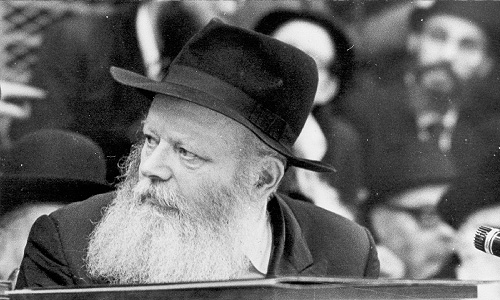

Adapted from a class given by Rabbi Yossi Paltiel, elucidating the Reb
Perek 111 in T’hillim is about emuna. That means that this kapitel is challenging you. There’s a world, and there’s G-d. If the world left G-d alone, or vice versa, there would be no problems. There would be no solutions either. When you juxtapose G-d and the world, it is apparent that the world has

I consider this kapitel to be a very special chapter of T’hillim. There are two Psalms that are virtual mirror images of one another: Chapters 111 and 112. They each have ten p’sukim, and they both have an interesting alphabetical sequence. Within each of the first eight p’sukim, there are two clauses, and the first letter of these clauses are in the order of the Alef-Beis (in the first verse, Alef-Beis; in the second, Gimmel-Dalet, etc.). Then, in each of the last two p’sukim, there are three clauses (beginning with the letters Pei-Tzaddik-Kuf, Reish-Shin-Tav), following the order of the twenty-two letters of the Hebrew alphabet. The difference is that Chapter 111 talks about G-d, whereas Chapter 112 talks about the Jewish People.
The commentaries tell us how this chapter relates the greatness of Hashem. The heading for this chapter in T’hillim states as follows: This psalm is written in alphabetical sequence, each verse containing two letters, save the last two verses which contain three letters each. The psalm is short yet prominent, speaking of the works of G-d and their greatness.
One of the commentaries observes how T’hillim is ruach ha’kodesh – Divine Inspiration. This means that David HaMelech was actually writing the words of Hashem. Thus, when one writes the words of G-d and it comes out alphabetically, it may be inferred that his inspiration is so strong that it also comes out in a unique manner.
A DEEPER QUESTION
I’ve been sitting on this kapitel for a while, learning it with Rashi, Ibn Ezra, Radak, and Metzudos – a whole collection of commentaries. There are also chassidic discourses from the Tzemach Tzedek on the fourth pasuk (Zeicher Asah L’Nifle’osav) and the eighth pasuk (S’muchim La’ad).
This chapter is about emuna. That means that this kapitel is challenging you. There’s a world, and there’s G-d. If the world left G-d alone, or vice versa, there would be no problems. There would be no solutions either. When you juxtapose G-d and the world, it is apparent that the world has one reality, while Hashem has a different reality, and quite often they’re in severe conflict with one another. I’m not only talking about the difficulty in being Torah observant, rather the fact that sometimes it doesn’t seem like G-d is right.
There’s an old joke about a guest at a Pesach Seder who was taken aback by the conduct of his host’s very sharp yet clever son. He turned to his host and said, “You know that your son is chutzpadik.”
At the end of the recitation of the Hagada, the boy’s father, determined to put this guest in his place, came to him with a question. “The song of Chad Gadya talks about a little goat that never harmed anyone. The cat eats the goat, which means that the cat is bad. As a result, the dog is good for biting the cat, the stick is bad for hitting the dog, the fire is good for burning the stick, the water is bad for quenching the fire, the ox is good, the shochet is bad….and the Angel of Death? How about G-d?” When the father asked for the simple interpretation of the Chad Gadya, the guest was stumped.
“Let me explain it to you,” the host said. “The cat ate the goat; therefore, this is a bad cat.” He then points at the guest and says, “But you, dog, who are you to get involved? It’s none of your business!”
This psalm contains the verse, “He has declared the power of His deeds to His people, to give them the inheritance of nations.” G-d gave Eretz Yisroel to the Jewish People, and the Gentiles say, “You’re thieves!” Who’s right? How many people today, including Jews unfortunately, see things as the Gentiles do? If not for the Jews and Israel in the middle of all these Moslems, the world would be a much better place. They cause so much trouble. How much more expensive is a barrel of oil because of the State of Israel?
THE ANSWER TO THE ENIGMA
The psalm concludes with the verse, “The beginning of wisdom is fear of G-d; sound wisdom for all who practice it. His praise endures forever.” In other words, understand that ultimately G-d is right and the Torah is right, and you need to develop a mindset of faith on two levels. On one level, much of what G-d does makes sense. The Gentile claims: Why are you taking my land? Why have you been oppressing the Palestinians for forty years? The Torah says: No. “The works of His hands are true and just.” We, as human beings, face a conflict. How much do we believe in G-d? It’s hard to believe in Him because of the yetzer ha’ra and all the trials we face. But it’s especially hard when He does things that make the Gentile say that the Angel of Death is right, and G-d…is killing him.
It’s an extremely important lesson for us to learn that what the Torah says is absolutely true. It doesn’t feel comfortable; it’s embarrassing. However, feeling uncomfortable and getting embarrassed are easy problems to overcome. It feels unjust; it seems as if G-d is mean; we look like thieves. Thus, you have to inspire yourself with such faith in G-d that even this is “true and just.”
Yet, there’s only one way for a person to develop such a belief in the truth of Torah when it conflicts with the world’s way of thinking: “The beginning of wisdom.” Number one is Yiddishkait. Furthermore, wisdom is not just the wisdom of Torah; it also refers to fear of G-d. A person who wants to learn other forms of wisdom – read the newspapers, understand politics and social sciences – can he then say, “The works of His hands are true and just?” For a Jew who wants to have a healthy belief in the Eibeshter, “the beginning of wisdom [must be] fear of G-d.”
THE BREAKDOWN
When interpreting a chapter of T’hillim, it is divided into sections. A psalm usually has an introduction, a conclusion, and there are a variety of ideas contained within the body of the chapter. In our chapter, the first verse is the introduction, while the second and third verses represent Dovid HaMelech’s description of the praise of G-d as it relates to the world at large, not necessarily to the Jewish People alone. The fourth, fifth, and sixth verses describe the special praise in the relationship between G-d and the Jewish People, the seventh and eighth verses continue to explain how everything that Hashem does for Am Yisroel is correct, the ninth verse is a summary, and the tenth and final verse is the lesson.
Praise G-d! I will give thanks (Odeh) to G-d with all my heart, in the counsel of the upright and the congregation.
Odeh can be translated three ways: I will thank, praise, or submit. These three interpretations represent three different levels in our connection to G-d. While submitting is the highest level, there is a precondition. When one submits, it implies that he doesn’t understand. When he praises, he does understand. When one thanks someone for a gift, he will only do so if he considers it to be a gift. Thus, the lower levels of connection are based on comprehension, whereas the highest level is based on submission: “I don’t understand, but I submit to the fact that G-d is the ultimate truth.”
“Upright” refers to tzaddikim, and “congregation” is a collection of Jews. There are Jews of great depth who are naturally few in number, and then there are ordinary Jews who are far more numerous. Each one of them has his/her own direction, a sense of what makes G-d true, just, fair, and kind, so Dovid HaMelech says here, “I want to praise Hashem in the counsel of the upright.” In other words, I want to tune in to the special and extraordinary people, those who have a much more G-dly concept of what is the greatness of Hashem, praising Him on their level. However, by the same token, I also want to praise G-d on the level of a “congregation,” common Jews. If someone is Jewish, that means that he can sense the Eibeshter, thereby enabling him to praise G-d also on the level of truth, justice, and faithfulness.
Great are the works of G-d, [yet] available to all who desire them.
We see here how Dovid HaMelech is writing according to a certain order. The first praise of Hashem is the chitzonius, the world (“Great are the works of G-d”). The various commentaries on T’hillim translate this in different ways. The Gemara states (as the Alter Rebbe brings in Tanya, Chapter 4) that “where you find the greatness of the Holy One, Blessed Be He, there you also find His humility.” One’s understanding of G-d’s greatness is merely a contraction of His true greatness, which makes it possible for him to comprehend it. Alternatively, there are commentaries that explain that the works of G-d are so great; no one can possibly understand them.
The Alter Rebbe once said that we say in davening on Rosh Hashanah and Yom Kippur, “You know the mysteries of the world.” He then added: “The mysteries of the Torah we too can know, but only He can know the mysteries of the world.” Yet, here David HaMelech states that they are “available to all who desire them.” As great as G-d is and as small as we are, if someone has a desire to know Hashem’s greatness, it is available and he can grasp it. According to other commentaries, there are so many wonderful blessings and secrets in the world G-d created, yet He placed all of them in such a way that [they are] “available to all who desire them.” G-d created a world from which we can derive benefit and find all of its treasures.
Majesty and splendor are His work, and His righteousness endures forever.
In this pasuk, Dovid HaMelech is describing how G-d made His world beautiful, orderly and precise. In the heavens, we see «majesty and splendor,» G-d›s beauty and wisdom, whereas in the earth, we witness the miracle of «[it] endures forever.» As the commentaries explain, nothing is supposed to last forever; everything has to die at some point. Yet, there is a concept of «the procreation of the species,» i.e., creation contains an infinite power to give birth to offspring, which is a miracle within nature. Thus, when we look at G-d›s world, we can see how «great are the works of G-d.» «Majesty and splendor are His work» represents the magnificence and expansiveness of the heavens, the mysteries of space, while the physical world demonstrates the «righteousness» and fairness of the Eibeshter.
However, there is also the unique relationship that exists between G-d and the Jewish People. This brings us to the next verse:
He established a memorial for His wonders, for G-d is gracious and compassionate.
G-d makes miracles at various times, but nevertheless, most miracles can be forgotten. Therefore, “He established a memorial,” i.e. these miracles re-occur in a small measure during each generation as a memorial to remind us constantly of the miracles He did in the past. In contrast, “He established a memorial” also means that He created Shabbos and Yom Tov, and He gave us a Torah to help us remember His wonders. In either case, this represents a higher idea. G-d doesn’t just create the miracle of the world itself, but also the miracle of His visibility. We can see Him within His world.
Why does G-d “establish a memorial for His wonders?” It is because He is “gracious and compassionate.” He is doing us a favor by reminding us of His miracles. Some commentaries say that He did us a favor by doing the miracles in the first place, but the pasuk refers specifically to the creation of the framework of an environment that enables us to remember these things. Moreover:
He gave food to those who fear Him; He remembers His covenant always.
Some of the commentaries, such as Metzudos, state that “food” (teref) refers to the manna from Heaven. Chassidus teaches that teref (numerical value = 289, referring to the 288 sparks of holiness and one additional uniting G-dly force), as in “she gives food to her household,” refers to the avoda of spiritual elevation. In contrast, manna is a food that requires no elevation.
Nevertheless, both interpretations can be correct: The first level of teref (“food to those who fear Him”) means dealing with the darkness in the world, and in the second level, G-d’s reward for bringing “food to her household” is sustenance that has no connection outside of the realm of holiness, like manna.
The commentaries place the second half of the verse (“He remembers His covenant always”) at a higher level than “He gave food to those who fear Him.” The word “always” (L’Olam) is literally translated as “to the world.” G-d causes his promise to Am Yisroel to be remembered in the world. There’s no trick to having G-d love us in Gan Eden; the whole idea is for this to take place here, in our corporeal existence. This refers to the Exodus from Egypt, which happened thousands of years ago, yet we relate to it as a current event.
Thus, the drama in this chapter of T’hillim is not G-d; rather it›s the concept of His closeness to the world. This refers to how we see Hashem in this world, or to be more specific, His relationship with the Jewish People. And where does He show this to us?
He has declared the power of His deeds to His people, to give them the heritage of nations.
G-d made two promises to Avraham Avinu. When he heard the first promise, Avraham Avinu said, “I believe you.” However, for the second promise, he replied, “It can’t be. I need proof.”
What were the two promises? The first promise was for children. G-d promised Avraham Avinu that his children would live forever and this has been quite true. Yet, when He told him that Eretz Yisroel would be his children’s land for all eternity, the Divine promise was not enough. He needed evidence.
The world makes a big deal over the idea that there is a piece of land on this earth, seemingly like any other, which is called the Holy Land – and that it’s the everlasting inheritance of the People of Israel, regardless of whether Jews live there or whether Gentiles accept this notion.
However, the problem is that this big deal is not just with us, because the Gentiles also know in their hearts that it’s really ours. If only they would take the Bible out of the equation, the United Nations would have no difficulty with it. Nevertheless, no matter how hard they try, this can’t be done. Every Gentile has the Bible in his heart, and it all appears clearly in the Bible, even though it doesn’t make any sense. Yet, while it isn’t very economical or politically feasible, how much easier would America’s life be if it didn’t have to defend Israel against the Arabs? It would cut the price of a gallon of gas in half!
Therefore, the pasuk states: “He has declared the power of His deeds to His people.” How do we see that this world belongs to G-d? It is when He “gives them the heritage of nations.” Rashi’s famous commentary at the very beginning of Chumash contains this verse. Why do the Gentiles claim that the Jews are thieves? Everyone knows that if someone lives in a land that is his, and someone comes along and conquers him in a war, thereby driving him out of his land, then while this victor may not be a nice person, the land becomes his. Subsequently, if another nation comes along and drives out the first conqueror, ownership of the land passes to them. However, there is one exception: You can kick every last Jew out of Eretz Yisroel, but it remains the land of the Jews.
But that’s stealing, the nations demand. Why is this land different? Why is this people different? Jews hadn’t been living in Eretz Yisroel for hundreds of years. What claim can they possibly make on it?
The answer is clear: “The whole earth belongs to G-d.” The Eibeshter doesn’t rule the heavens alone; He rules the earth as well. “He created it and gave it to whomever He deemed proper. When He wished, He gave it to them, and when He wished, He took it away from them and gave it to us.” Thus, G-d has the right to say that this is our land, and we have to really believe that.
The works of His hands are true and fair; all His commands are faithful.
G-d made a promise that He would give us the land, and He kept his promise. Therefore, not only are His works «true,» He also does what is «fair» to the Gentiles. How is this possible if the Gentiles say that they were living there first? The commentaries state that this is due to their transgressions, which caused them to forfeit their rights to Eretz Yisroel. Rashi mentions how the land cannot tolerate certain sins, particularly idol worship, and as a result, it «vomited out its inhabitants.»
Thus, while G-d’s account with the Jewish People regarding Eretz Yisroel is based on truth, His account with the Gentiles is one of justice and fairness. The Gentile charges that this is dishonesty, corruption, and favoritism, and G-d replies (in effect), “That may be so, but you lost your claim on the land fair and square, due to your improper conduct.”
“All His commands are faithful” – this refers to a heartfelt emuna. The nature of Eretz Yisroel and our relationship to that Land is something that no one can fully comprehend, and it requires a sense of true inner understanding. Jews and, l’havdil, Gentiles know this somewhere deep within their hearts. While the UN considers Israel to be a big thorn in the eye, nevertheless, in the heart of man and especially of Jews, they know this to be right. It’s difficult to explain, it’s hard to prove or even to argue against it, but the faithfulness is there.
They are steadfast in the world forever, for they are made with truth and fairness.
Chassidus explains how things happen in parallel worlds. However, things don’t happen as they should in the more heavenly realms until it first occurs in the physical world.
The pasuk here re-emphasizes how Jews are judged according to “truth,” while the Gentiles’ benchmark is “fairness.”
Thus, we have seen how this psalm touches upon the special relationship between Jews and G-d, as exemplified by the miracles at the Exodus from Egypt, the miracles that followed the Exodus, and the greatest miracle of all – that of receiving Eretz Yisroel. This is then followed by an account of G-d’s truth, fairness, and justice.
This is the test that we have. We are so involved in the modern world with its non-Jewish ideas and values. However, we must remember the truth within the values of Torah. If there is even the slightest conflict between what is stated in Torah and in the Rebbe’s sichos on the one hand, and what the world thinks on the other, the pasuk says, “The works of His hands are true and fair.” This is what being a Jew is all about, and that’s what this kapitel is teaching us.
A person has questions; there are issues in the Torah that he doesn’t understand. How can a man sell his daughter as a slave? That’s crazy! If a person commits such-and-such a sin, his head is cut off? In short, one must dig deep for the truth, and he must find it within himself.
He sent redemption to His people, [by] commanding His covenant forever; holy and awesome is His Name.
There are three parts in this verse, which hint to the three stages in the process of G-d’s connection to the Jewish People:
1) When do Jews need redemption? When they are in exile or in some other difficult situation, He sends redemption to Jews from whatever hardship they are enduring.
2) “Commanding (tziva) His covenant forever” means that He connects (tzavsa) us to Him in this world through His covenant of Torah and mitzvos, even when they are not in a situation where they specifically need some personal salvation.
3) “Holy and awesome is His Name” represents the third dimension of the connection between G-d and the Jewish People that is completely beyond their comprehension. When a Jew is in exile and in need of redemption, it’s very obvious what G-d is doing for him. When a Jew is already in a state of redemption, and G-d brings him to a higher level of redemption through Torah and mitzvos, this relates to “Holy and awesome is His Name,” the study of the hidden teachings of the Torah. This reveals that when it comes to G-d, there are things that we try and understand, yet they are ultimately beyond our comprehension.
Therefore, since Yiddishkait exists at all three stages:
The beginning of wisdom is fear of G-d; sound wisdom for all who practice it. His praise endures forever.
Most of the commentaries explain that when it comes to G-d, one must approach matters with faith and have kabbalas ol that there is a proper order to everything He does. Yiras Hashem (fear of G-d) comes first. Even the Radak, who was a philosopher, says that in order for the philosophies not to affect a person adversely, he must first have a solid foundation in the reality of Torah and emuna.
It’s not so much the philosophy of yiras Hashem that is what is being addressed than the fact of yiras Hashem. Being a Jew begins with the concept of simple faith. It must be so sturdy and stable that it provides support against the world›s challenges to our emuna, claiming that (ch”v) G-d is the corrupt Master of a corrupt world.
“Sound wisdom for all who practice it” – the Gemara explains that instead it should seemingly say “for all who learn it.” Since when is Torah something that a person does? Torah must be learned – for its own sake and with faith in G-d – but in such a way that will lead to action. When there›s no separation between ideas and practical deed, when one knows that the Torah study is not just ideas, then it›s connected to emuna.
Thus, chassidus explains, when a person approaches Yiddishkait with this value system, “His (the Jew’s) praise (glow) endures forever.” If someone invests in other interests, he may achieve ephemeral fame, but eventually people will say, “He didn’t have enough information, he was misled, his ideas were wrong, and his philosophies were incorrect.” However, if a person says, “My priority is the Eibeshter,” then that Jew’s light and glow remains eternal.
The Rebbe once spoke at a farbrengen, almost tongue in cheek, about “Who’s Who,” the annual listing of America’s most important people. He said that any person who is listed in the “Who’s Who” for one year can still be a nobody even during that year…
For someone to be a real member of “Who’s Who,” his praise must endure forever.
Rabbi Yossi Paltiel. "Adapted from a class given by Rabbi Yossi Paltiel, elucidating the Reb." Beis Moshiach, no. 832 (May 2, 2012).